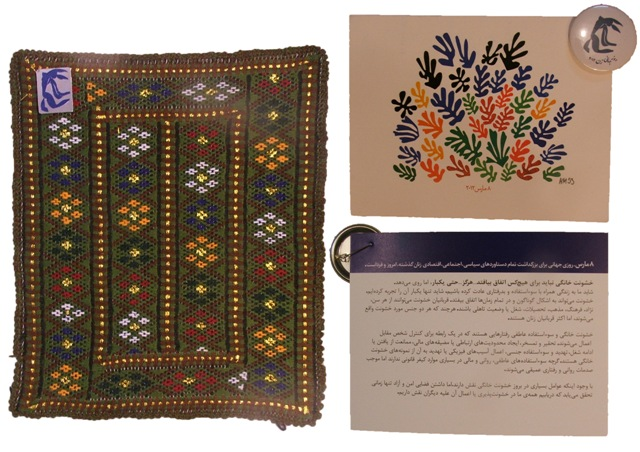

|
|
8 مارس در سیستان و بلوچستان
يكشنبه21 اسفند 1390
تا قانون خانواده برابر: خشونت خانگی نباید برای هیچ کس اتفاق بیفتد ... هرگز ... حتی یکبار، اما روی می دهد. شاید ما به زندگی همراه با سوء استفاده و بد رفتاری عادت کرده باشیم. شاید تنها یکبار آن را تجربه کرده ایم. خشونت می تواند در اشکال گوناگون و در تمام زمان ها اتفاق بیفتد. قربانیان خشونت می توانند از هر سن، نژآد، فرهنگ، مذهب، تحصیلات، شغل یا وضعیت تاهلی باشند. هرچند که هر دو جنس مورد خشونت واقع می شوند، اما اکثر قربانیان زنان هستند.
خشونت خانگی و سواستفاده عاطفی رفتارهایی هستند که در یک رابطه برای کنترل شخص مقابل اعمال می شوند. تحقیر و تمسخر، ایجاد محدودیت های ارتباطی یا مضیقه مالی، ممانعت از یافتن یا ادامه ی شغل، تهدید و سو استفاده ی جنسی، اعمال آسیب های فیزیکی یا تهدید به آن از نمونه های خشونت خانگی هستند. گرچه سو استفاده های عاطفی ، روانی و مالی در بسیاری از موارد کیفر قانونی ندارند اما موجب صدمات روانی و رفتاری عمیقی می شوند.
با وجود اینکه عوامل بسیاری در بروز خشونت خانگی نقش دارند، اما داشتن فضایی امن و آزاد تنها زمانی تحقق می یابد که دریابیم همه ی ما در خشونت پذیری یا اعمال آن علیه دیگران نقش داریم .
این متنی است که در کارت هایی به مناسب 8 مارس روز جهانی زن نوشته شده است و توسط فعالان حقوق زن آن منطقه بین مردم استان سیستان و بلوچستان، توزیع شده است.
عکس زیر نمونه ی سوزن دوزی از کار دست زنان روستای زر آباد استان سیستان و بلوچستان است که به مناسبت روز جهانی زن سفارش داده شده تا بهانه ای باشد برای یادآوری این موضوع که آمار زنان قربانی ایدز به علت مرسوم بودن چندهمسری در این منطقه دو برابر میانگین زنان مبتلا به ایدز در کل کشور است و حتی تا به امروز نمونه هایی از ختنه میان دختران بلوچ دیده می شود.

درآمد حاصل از فروش این سوزن دوزی ها صرف دستمزد این زنان و تهیه ی هدیه هایی کوچک برای بزرگداشت روز جهانی زن می شود.